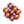
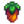

Socializar:
Se puede hacer amistad con los aldeanos de Pueblo Pelícano. A medida que la amistad se profundiza, los diálogos con los aldeanos se vuelven más amigables, ocurren las escenas llamadas eventos de corazón, los aldeanos te enviarán regalos por correo, y el matrimonio es posible con uno de los aldeanos candidatos.
Mecánicas de la amistad
Sistema de puntuación
Cada aldeano tiene una puntuación de amistad representada por un medidor de diez corazones, excepto el cónyuge o compañero de habitación del jugador, que tiene un medidor de catorce corazones. Un candidato a matrimonio que no haya recibido un ramo tiene los dos últimos corazones en gris.

Cada corazón son 250 puntos de amistad. Puedes ver el estado de las relaciones en la ficha social del menú de juego.
Al hablar con los aldeanos, aparecerá un círculo junto a su retrato. Su color dependerá del número de corazones que el jugador tenga con el aldeano. El azul indica 0-1 corazones, el verde 2-3, el amarillo 4-5, el rojo 6-7, el morado 8-9 y a los 10-14 corazones aparecerá una estrella morada. Al pasar el ratón sobre el círculo se mostrará el número de corazones sobre 10, si no está casado.
Los puntos de amistad se pueden aumentar con cada aldeano por:
- Hablar con ellos al día (normalmente +20; de lo contrario +10 si el aldeano esta en medio de una animación especial, como hacer ejercicio o usando una cámara).
- Completar las misiones de entrega de objetos (+150).
- Darles un regalo que les encante, les guste o les resulte neutral.
- Darles el máximo de dos regalos en una semana (+10, se concede al Domingo siguiente).
- Invitarles al Cine (+200 si les encanta la película, +100 si les gusta).
- Comprarles un aperitivo en el Cine (+50 si les encanta, +25 si les gusta).
- Tomar algunas decisiones en sus eventos de corazón.
- Besar a tu cónyuge (+10, sólo para el primer beso del día); no se aplica si Krobus es tu compañero de piso.
Los puntos de amistad pueden disminuir por:
- No hablarle a un aldeano.
- Darles un regalo que no les gusta u odien.
- Dispararles a ellos con un tirachinas.
- Tomar algunas decisiones en sus eventos de corazón.
- Hurgar en el Cubo de basura cuando estén a menos de 7 casillas del jugador (-25, excepto Linus, que aumenta +5). Hablarán para indicar que te han visto. Si más de un aldeano está a menos de 7 casillas del jugador cuando rebuscan, sólo uno hablará y perderá la amistad.
El jugador puede entrar en la habitación de un aldeano cuando el medidor de corazones correspondiente marque al menos 2 corazones. Este nivel mejora el acceso hacia el aldeano para hablar y hacer regalos. Una vez abierta, la habitación queda permanentemente desbloqueada aunque el medidor de corazón baje de 2 corazones.
Los puntos de amistad pueden aumentar hasta un máximo de 2749 (un punto menos que 11 corazones) para los aldeanos no candidatos al matrimonio.
Con los candidatos al matrimonio, el contador se detiene en 8 corazones. No aumentará a menos que le des un ramo de flores al candidato/a para indicar tu interés romántico. Si lo haces, el contador se desbloquea y funciona como antes hasta que se alcanzan los diez corazones. (Tenga en cuenta que después de alcanzar 8 corazones antes del ramo, los puntos de amistad pueden seguir subiendo hasta justo por debajo de 9 corazones (2249 puntos) y no decaerán hasta que el candidato reciba un ramo). Es posible regalar un ramo de flores a todos y cada uno de los candidatos al matrimonio, y elevar todos sus niveles de amistad a 10 corazones, sin dañar sus relaciones con otras parejas románticas, siempre y cuando aún no se haya declarado. (Si te has declarado, estás casado o tienes un compañero de piso, existe la posibilidad de que tu prometido/cónyuge/compañero de piso se ponga celoso). Romper con ellos bajará instantáneamente el medidor de relación a 5 corazones, pero se puede volver a subir a 8 corazones.
Salir con todos los solteros o solteras puede provocar un Evento de Diez Corazones Grupal, que no afecta a la amistad, pero puede impedir que el jugador les haga regalos durante una semana.
Cuando propones matrimonio, los medidores de corazón de todos los demás candidatos al matrimonio se convierten al comportamiento de todos los demás aldeanos, puesto que ninguno es ya candidato al matrimonio. Sin embargo, sus entradas en la pestaña social siguen mostrando si previamente les has regalado un ramo. Además, después del matrimonio, los eventos de corazón románticos pueden seguir activándose con otros candidatos a matrimonio si previamente se les ha dado un ramo. Tras la ceremonia matrimonial, el contador de tu cónyuge se desbloquea de nuevo y puede aumentar hasta 14 corazones. Los puntos de amistad pueden entonces aumentar hasta un máximo de 3749 (un punto menos que 15 corazones).
Decadencia
Cada día, no hablar con un aldeano disminuirá ligeramente su amistad a no ser que el medidor esté lleno. Si el jugador está casado, la decadencia nunca se detiene con su cónyuge aunque el jugador esté a 14 corazones con él/ella. Llamar a un aldeano usando el Teléfono no cuenta como hablar con el aldeano.
| Relación | Velocidad de decadencia | La decadencia se detiene |
|---|---|---|
| Casado(a) | -20 / día | Nunca |
| Entregó ramo de flores | -10 / día | 10 corazones |
| No entregó ramo de flores | -2 / día | 8 corazones |
| No soltero(a) | -2 / día | 10 corazones |
Regalos
Puedes dar un regalo por día a cada aldeano, hasta dos regalos por semana, como se indica en los cuadros de verificación en la pestaña social. Puedes revisar las preferencias de regalos del aldeano haciendo clic en su fila en la pestaña Social para abrir el "Registro de regalos". Este registro lleva la cuenta de los regalos hechos y las preferencias de regalos aprendidas a través de Notas Secretas y diálogos con su familia y amigos.
Para el propósito de dar regalos, la semana empieza los domingos. Si das a un aldeano dos regalos en una semana, el medidor de corazones se incrementará diez puntos adicionales durante las mañanas de los Domingos cuando despiertas.
Siempre puedes hacer un regalo de cumpleaños a un aldeano, aunque ya le hayas hecho otros dos regalos esa semana.
Puedes dar a tu cónyuge un regalo cada día de la semana, pero cualquier ganancia o pérdida de amistad se reduce a la mitad.
Cada aldeano tiene gustos y disgustos individuales, lo que afecta a cuántos puntos de amistad se ganan o pierden cuando les haces un regalo. Los puntos de amistad se multiplican en sus cumpleaños (x8) y en el intercambio de regalos secreto (x5):
| Apreciación del regalo | Normal | Estrella Invernal (×5) | Cumpleaños (×8) |
|---|---|---|---|
| Le encanta | +80 | +400 | +640 |
| Le gusta | +45 | +225 | +360 |
| Neutral | +20 | +100 | +160 |
| No le gusta | -20 | -100 | -160 |
| Odia | -40 | -200 | -320 |
Si el regalo le gustó o le encantó, los puntos que se ganen también estarán afectado por la calidad del objeto:
| Calidad | Multiplicador | Efecto | |
|---|---|---|---|
| Normal | ×1 | +0% | |
 |
Plata | ×1.1 | +10% |
 |
Oro | ×1.25 | +25% |
 |
Iridio | ×1.5 | +50% |
En un día cualquiera, regalar un objeto amado de calidad normal siempre da más puntos que regalar un objeto gustado de calidad iridio a un aldeano determinado.
Para los regalos queridos o amados, la ecuación es Multiplicador de Evento x Preferencia x Multiplicador de Calidad, donde Multiplicador de Evento es 1 (cualquier día), 5 (Si regalas algo en la Fiesta de la estrella invernal), o 8 (Su cumpleaños), Preferencia es 80 (regalos amados) o 45 (regalos gustados), y Multiplicador de calidad es 1, 1,1, 1,25, o 1,5. (Para los regalos neutros, disgustados u odiados, la ecuación es simplemente Multiplicador de Evento x Preferencia.) El máximo de puntos de amistad posible con un solo regalo sería obsequiar a alguien con un regalo amado de calidad iridio en su cumpleaños, lo que daría 960 puntos, justo por debajo de 4 corazones.
Eventos de corazón
Ganando amistad con cada aldeano hará que se desbloqueen eventos únicos (para ver los requisitos, ver el articulo del aldeano). Es posible perderse permanentemente algunos eventos, aunque la mayoría pueden verse en cualquier momento (con algunas restricciones horarias) o fuera de orden. En algunos eventos de corazón, no es posible aumentar o disminuir la amistad con nadie, aunque haya opciones de diálogo disponibles. Sin embargo, en ciertos eventos de corazón, tomar ciertas decisiones puede aumentar o disminuir la amistad con ciertos aldeanos implicados. El máximo posible de puntos de amistad que se pueden ganar en un solo evento de corazón es +250 del evento de 8 corazones de Linus, mientras que el máximo posible de puntos de amistad que se pueden perder es -1500 de los eventos de 8 y 10 corazones de Penny.
Enamorar
Algunos aldeanos se pueden enamorar del jugador (ver candidatos para matrimonio). Una vez que el jugador ha alcanzado ocho corazones con un/a candidato/a, puede darle un ramo de flores para desbloquear el noveno y décimo corazón. Una vez que el jugador ha alcanzado diez corazones con un candidato, el jugador puede darle un Colgante de sirena para proponerle matrimonio, el cual el candidato siempre acepta. Como alternativa, a los 10 corazones, el jugador puede darle a Krobus un Colgante de fantasma del vacío para indicar que le gustaría irse a vivir juntos como compañeros de piso, algo que Krobus siempre acepta.
Tras convertirse en cónyuge o compañero de piso del jugador, el aldeano se muda a la casa del jugador y su medidor de amistad aumenta hasta catorce corazones. Después de alcanzar 12,5 corazones (3125 puntos), el aldeano dará al jugador una Fruta estelar si el jugador no ha recibido una de esta manera anteriormente.
Misiones
Una vez completada la misión introductoria del juego (Presentaciones), aumenta en 100 los puntos de amistad del jugador con cada uno de los 28 aldeanos iniciales. (El Mago no está incluido en estos aldeanos).
Algunas Misiones de Historia y Misiones de Pedidos Especiales te harán entablar amistad con ciertos aldeanos.
Completando las misiones «Necesito ayuda» de tipo "entrega", te da como recompensa 150 puntos de amistad con el aldeano que requiere tu ayuda.
Festivales
Se ganan 20 puntos de amistad por hablar con los aldeanos en los festivales, igual que cualquier día no festivo. Tres festivales pueden afectar tus puntos de amistad:
- La Danza floral aumenta la amistad en 250 puntos (un corazón) con el compañero de baile del jugador.
- El Luau puede aumentar o disminuir los puntos de amistad con todos los aldeanos excepto con Sandy, el Mago, Krobus y el Enano. Esto depende del ingrediente que se haya añadido a la sopa.
- El regalo a tu amigo secreto en la Fiesta de la estrella de invierno vale 5x la cantidad normal de puntos de amistad.
Adicionalmente, hablar o dar regalos a los aldeanos durante el Mercado nocturno incrementará la amistad con ellos, de la misma manera en la que se da afuera de los festivales.
Lotes del tablón de anuncios
Completando todos los lotes del Tablón de Anuncios mejora el nivel de amistad con los aldeanos que no son candidatos al matrimonio por dos corazones (500 puntos). Tener en cuenta que esto solo aplica a los aldeanos que no son candidatos y que hayas conocido en persona. Los aldeanos que no aparezcan en la pestaña social del menú del jugador y los aldeanos cuyos nombres aparezcan como "???" no recibirán los 500 puntos.
Tenga en cuenta que no necesitas entender el idioma Enano para que el Enano reciba los 500 puntos. Por otro lado, tienes que entender el idioma enano para dar regalos que afecte el nivel de amistad con él.
Regalos Universales
A continuación hay listas de objetos que son universalmente amados, gustados, considerados neutrales, desagradables u odiados. Ten en cuenta que hay algunas excepciones y que los gustos individuales de los aldeanos prevalecen sobre cualquier gusto universal.
Las preferencias por los Huevos, Leche, Frutas, y principalmente los Artículos recolectables varían por cada aldeano, y generalmente no están listados aquí.
Ten en cuenta que los huevos de dinosaurio se consideran artefactos y no Huevos con propósitos de regalo.
Universalmente Amados
Esta es una lista de artículos que a casi todos los aldeanos les encanta recibir como regalo. Estos objetos garantizan el máximo de puntos (80) para tu relación, pero pueden ser difíciles de conseguir.
Cuando les das un regalo que les encanta, los aldeanos generalmente responden con un corazón dentro de una burbuja. 
- Calabaza de oro
- Caramelo mágico
- Perla
- Esquirla prismática
- Pata de conejo
Universalmente Amados (excepciones)
COMPLETAR
Universalmente Agradables
Aunque vale menos puntos de amistad que un regalo amado, un regalo que gusta aumenta la amistad en 45 puntos (algo más de la mitad que un regalo amado) y suele ser mucho más fácil de conseguir.
- Todos los productos artesanales (Excepto por el Aceite que es universalmente desagradable, y la Mayonesa sombría que es universalmente odiada).
- Todas las comidas (Excepto por el Huevo frito y Pan, que son universalmente neutrales, y el Bollo extraño y el Budín de espuma de mar que son universalmente odiados)
- Todas las flores (Excepto por la Amapola, que es universalmente odiada)
- Todos los minerales recolectables (Excepto por el Cuarzo que varía por cada aldeano)
- Todos los frutos de árbol (Excepto Plátano y Mango, que siguen las preferencias específicas de los aldeanos por la fruta que no viene de los árboles frutales).
- Todas las gemas (Excepto por la Esquirla prismática que es amada)
- Todos los vegetales (incluyendo el Helecho, pero excluyendo el Lúpulo, Hojas de té y Trigo que son universalmente neutrales, y Arroz sin moler, el cual es universalmente desagradable).
- Elixir de vida.
- Jarabe de arce.
- Piña Colada.
Universalmente Agradables (excepciones)
A continuación encontrará una tabla desplegable con todas las excepciones de los regalos Universalmente Agradables, listados por aldeano. (Ver también: Lista de todos los regalos).
TERMINAR
Universalmente Neutrales
Esta es una lista de artículos que se puede obtener una respuesta neutral de los aldeanos, y dan 20 puntos de amistad. Hay algunas excepciones.
- Pan
- Almeja
- Coral
- Pluma de pato
-
 Huevo frito
Huevo frito - Lúpulo
- Concha de nautilo
- Concha arcoíris
-  Huevas
- Tinta de calamar
-  Baya de gema dulce
-
 Hojas de té
Hojas de té - Trufa
-
 Trigo
Trigo - Lana
Universalmente Neutrales (excepciones)
-
¿?
-
¿?
-
¿?
-
¿?
-
¿?
-
¿?
-
¿?
-
¿?
-
¿?
-
¿?
Universalmente Desagradables
Esta es una lista de los artículos que disminuirán la amistad por 20 puntos cuando son entregados como regalos.
Universalmente Desagradables (excepciones)
COMPLETAR
Logros
Hay 6 logros relacionados con la amistad:
- Una nueva amistad (Alcanza un nivel de amistad de 5 corazones con alguien.)
- Mejores amigos (Alcanza un nivel de amistad de 10 corazones con alguien.)
- Un granjero querido (Alcanza un nivel de amistad de 10 corazones con 8 personas.)
- Colegas (Alcanza un nivel de amistad de 5 corazones con 4 personas.)
- Contactos (Alcanza un nivel de amistad de 5 corazones con 10 personas.)
- Popular (Alcanza un nivel de amistad de 5 corazones con 20 personas.)